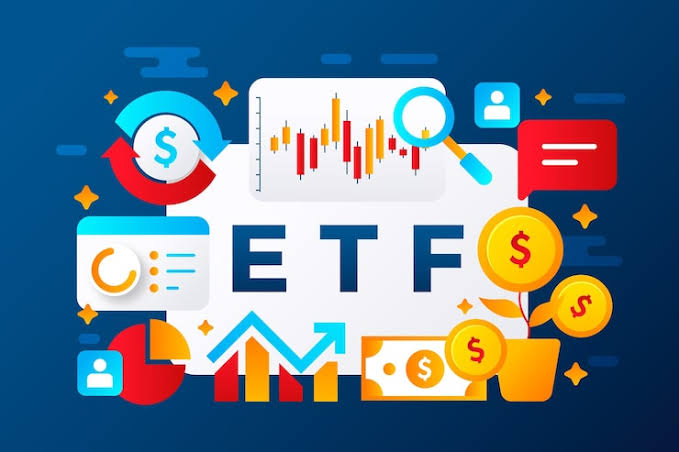

An index fund is a type of mutual fund or exchange-traded fund (ETF) designed to match or track the components of a financial market index, such as the S&P 500 or the NASDAQ.
Index funds are usually sold by asset managers, which are companies that take money from clients and invest it for them. Examples include BlackRock and Vanguard, who when combined, invest over $20 Trillion in the market
| Fund Name | S&P 500 Index Fund | iShares Global Clean Energy ETF | American Funds Growth and Income Portfolio Class A |
|---|---|---|---|
| Expense Ratio | 0.03% (Very Low) | 0.45% (Moderate) | 0.75% (Higher) |
| Strategy | Passive tracking of the entire market | Targeting specific high-growth sectors within clean energy | Human managers selecting stocks to maximize alpha (metric that tracks how well a fund beats the broader market) |
| Risk | Moderate / Market Standard | High / Volatile | Varies based on manager strategy |
Overall, index funds are important tools for investing. They provide an easy way for consumers to put money into the stock market and generate some amount of returns.